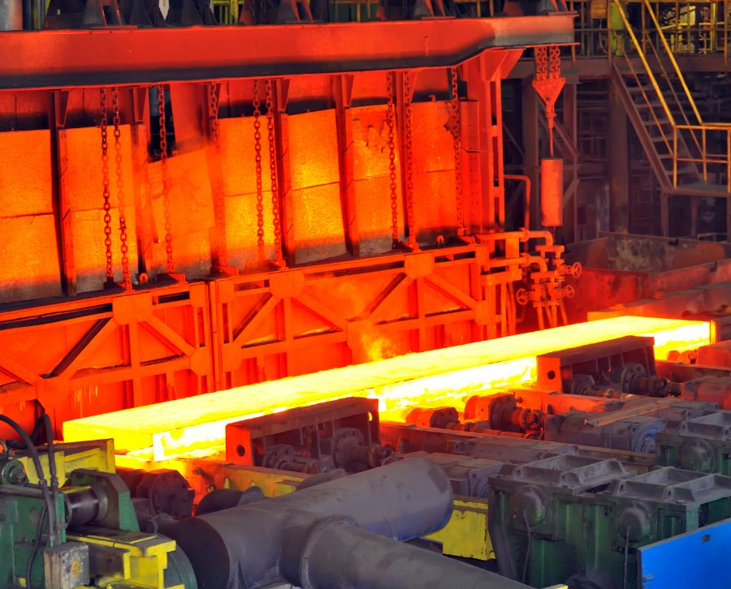

PRESSLER Experiencia, tecnología y compromiso para la industria Metalúrgica Argentina desde 1959.
Nuestros Servicios
Optimizamos las propiedades de las piezas metálicas mejorando su dureza, resistencia y durabilidad, con trazabilidad y calidad garantizadas en cada etapa.
TRATAMIENTOS PARA MOLDES DE INYECCION DE ALUMINIO Y MATRICES

Mejoramos la dureza, resistencia y comportamiento estructural de piezas metálicas, asegurando un rendimiento óptimo en condiciones de trabajo exigentes.
- Distensionado inicial
- Temple y triple revenido
- Oxidación controlada
- Ensayos metalográficos
- Nitrurado
- Distensionados de mantenimiento
TRATAMIENTOS TERMICOS

- Austempering:(Tratamiento isotérmico que mejora la tenacidad y reduce distorsiones en aceros de medio y alto carbono)
- Martempering: (Proceso que reduce tensiones internas y riesgos de agrietamiento, manteniendo alta dureza)
- Temple y Revenido: (Aumento de dureza seguido de un revenido para mejorar la resistencia a impactos y la estabilidad)
- Nitrurado: (Incremento de dureza superficial sin deformación estructural, ideal para componentes sometidos a desgaste)
- Bonificado: (Combinación de temple y revenido con características mecánicas equilibradas para piezas estructurales)
- Distensionado: (Eliminación de tensiones internas acumuladas por mecanizado o soldadura)
- Oxidación controlada: (Tratamiento superficial para mejorar la resistencia a la corrosión y la fricción)
- Recocido: (Mejora la maquinabilidad y estabilidad dimensional del material)
- Normalizado: (Proceso para homogenizar estructura interna y mejorar propiedades mecánicas)
- Cementado: (Endurecimiento superficial con núcleo tenaz, ideal para componentes de alta fricción)
- Carbonitrurado: (Tratamiento termoquímico para mejorar dureza superficial y resistencia al desgaste)